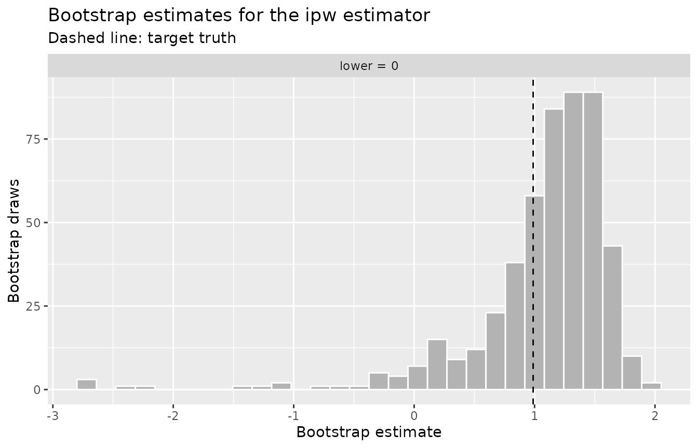
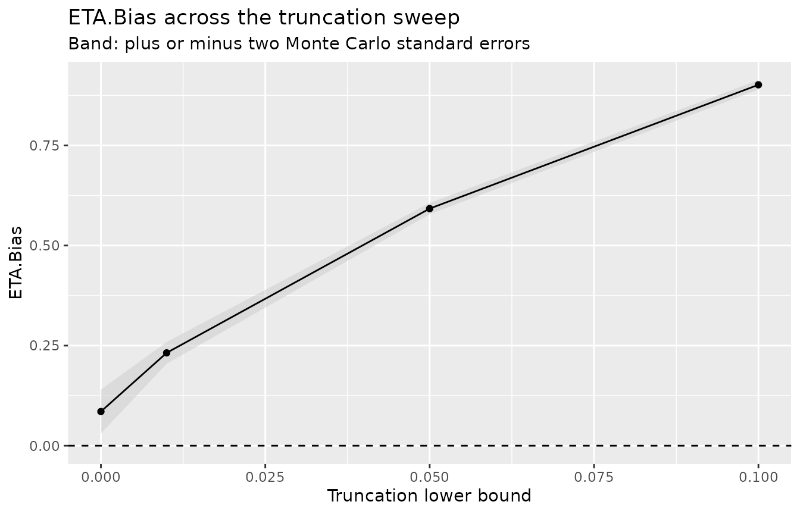
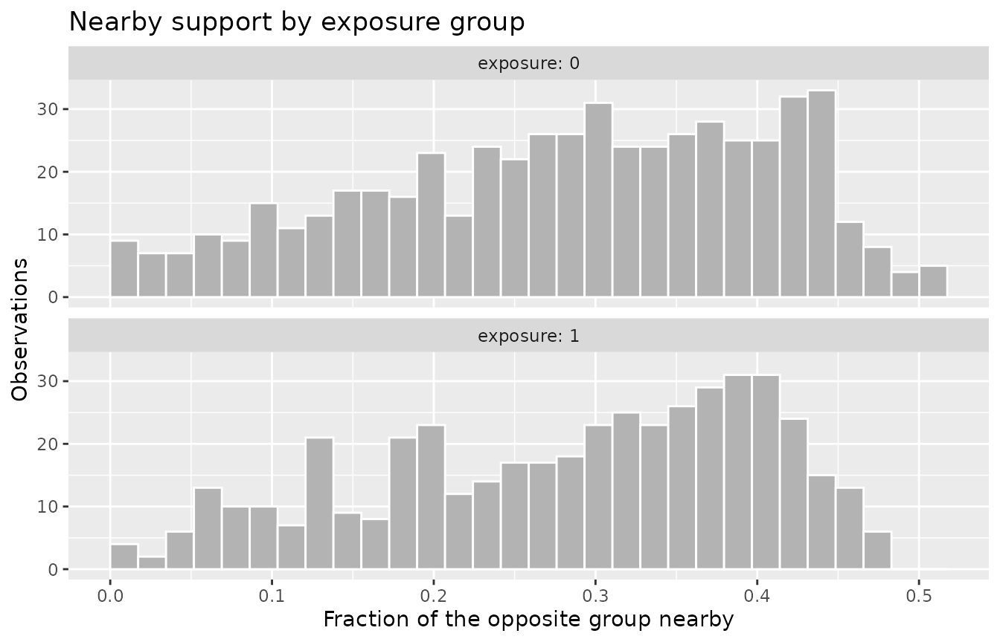

Most positivity diagnostics answer one question: does the assumption
hold, and where does support run thin? PoRT names the subgroups,
effective data points measure the support around each intervention, and
the extrapolation check locates units with no near neighbor in the
opposite exposure group. The two diagnostics in this vignette answer a
different question. They take the estimator you intend to use as given,
and ask what a positivity violation does to that estimator’s answer.
check_eta_bias() estimates the bias a positivity violation
inflicts on a chosen estimator under the data’s own fitted mechanisms,
and the further bias a truncation rule would add on top of it.
check_extrapolation(), read through the lens of
g-computation, shows which units force the outcome model to predict
outside the region where it was trained.
Setup
Both examples use pos_violations, the simulated dataset
described in ?pos_violations and in the getting-started
vignette. It carries two planted problems: a structural violation, where
no subject with region == "b" and x2 > 1 is
ever exposed, and a practical near-violation, where exposure depends
steeply on x1, so the fitted propensity approaches zero in
the lower tail of x1 and one in the upper tail while both
exposure levels remain observed.
ETA.Bias: the bias an estimator incurs
check_eta_bias() implements the ETA.Bias
parametric-bootstrap diagnostic of Petersen et al. (2012). The idea is
to treat the data’s own fitted mechanisms as a known truth and measure
how a candidate estimator behaves under it.
The procedure has three parts. First, it fits a propensity model for
the exposure and an outcome regression on the exposure and covariates.
The g-computation contrast from the outcome model, averaged over the
sample, becomes the target truth. This target depends on
the outcome model alone, so it is the same for every estimator and
constant across truncation levels. Second, it draws bootstrap datasets:
each resamples the covariate rows, draws a bootstrap exposure from the
untruncated fitted propensity, and draws a bootstrap outcome from the
fitted outcome model. Third, it refits both models on each bootstrap
dataset and applies the candidate estimator, bounding the fitted
propensity into the truncation interval where the estimator uses it.
ETA.Bias is the mean of the bootstrap estimates minus the target.
Because truncation is a property of the estimator rather than of the
data-generating mechanism, the bootstrap exposure is always drawn from
the untruncated propensity, so the diagnostic isolates the bias the
estimator plus its truncation rule introduce.
check_eta_bias() needs an outcome, which
pos_violations does not include, so
check_positivity() never runs it and you call it directly.
We construct a continuous outcome that depends on the exposure and the
covariates. Its true average treatment effect is one.
We supply the covariates x1 and x2. The
steep dependence of the exposure on x1 is the source of the
extreme propensities that inverse probability weighting reacts to, and
the outcome leans on x1 more heavily than on
x2, so the violation has something to act on. We diagnose
the inverse-probability-weighting estimator, which divides by the fitted
propensity and is therefore the estimator most exposed to a positivity
violation.
The bootstrap is random, so we set a seed in the chunk. We use
n_boot = 500 draws, which takes about half a second with
these covariates and the default model formulas. The number of draws
sets the Monte Carlo standard error attached to each estimate, and that
error has to be small relative to the bias you are trying to read. The
bias below is under a tenth of the target, so a few dozen draws would
leave it buried in Monte Carlo noise.
The headline measurement is the untruncated run. With no truncation the estimator uses the fitted propensities as they stand, so the reported ETA.Bias is the bias the positivity violation itself inflicts on inverse probability weighting.
set.seed(1)
eta_ipw <- check_eta_bias(
eta_data,
exposure,
y,
c(x1, x2),
estimator = "ipw",
n_boot = 500
)
eta_ipw
#>
#> ── ETA bias ────────────────────────────────────────────────────────────────────
#> Exposure: "exposure" (binary)
#> Observations: 1000
#> Estimator: ipw
#> Bootstrap draws: 500
#> Truth: 0.988
#> ETA.Bias: 0.085 (MC SE 0.027)The printed output reports the target truth, the estimator, and the
ETA.Bias with its Monte Carlo standard error. tidy()
returns the same quantities as a table, one row per truncation level,
along with the mean bootstrap estimate.
tidy(eta_ipw)
#> # A tibble: 1 × 5
#> truncation_lower truncation_upper bias mc_se boot_mean
#> <dbl> <dbl> <dbl> <dbl> <dbl>
#> 1 0 1 0.0853 0.0274 1.07The bias is positive and sits about three Monte Carlo standard errors
above zero, so it is a feature of the fitted mechanism rather than
bootstrap noise. The mechanism is the one the dataset was built to
carry. Exposure depends steeply on x1, so the fitted
propensity approaches zero in the lower tail of x1 and one
in the upper tail. Weighting by the inverse of those propensities
represents the two tails unevenly, and because the outcome depends on
x1, the weighted contrast tilts away from the target.
The type = "bootstrap" plot shows the distribution of
the bootstrap estimates with the target truth marked, one facet per
truncation level. There is a single level here, so there is a single
facet. Its spread is the sampling variability of the estimator under the
fitted mechanism, and the offset between its center and the dashed line
is the ETA.Bias. The long left tail is the other half of the picture: on
the occasional draw a propensity lands close enough to zero or one that
one observation’s weight dominates the estimate.
autoplot(eta_ipw, type = "bootstrap")
The three estimators respond differently, and running them on the same settings makes the contrast concrete. G-computation ignores the propensity altogether. The augmented, doubly robust estimator uses it and then corrects with the outcome model.
set.seed(1)
eta_gcomp <- check_eta_bias(
eta_data,
exposure,
y,
c(x1, x2),
estimator = "gcomp",
n_boot = 500
)
set.seed(1)
eta_aipw <- check_eta_bias(
eta_data,
exposure,
y,
c(x1, x2),
estimator = "aipw",
n_boot = 500
)
bind_rows(
ipw = tidy(eta_ipw),
gcomp = tidy(eta_gcomp),
aipw = tidy(eta_aipw),
.id = "estimator"
) |>
select(estimator, bias, mc_se)
#> # A tibble: 3 × 3
#> estimator bias mc_se
#> <chr> <dbl> <dbl>
#> 1 ipw 0.0853 0.0274
#> 2 gcomp -0.00223 0.00375
#> 3 aipw 0.0243 0.0161G-computation sits within one Monte Carlo standard error of zero, which is what it should do: the target truth is itself a g-computation estimate, so the only distance between the two is bootstrap noise. The augmented estimator also sits within two standard errors of zero, its outcome-model correction absorbing most of the weighting bias, and it carries more variance than g-computation does. Inverse probability weighting is the estimator the violation reaches, which is why we diagnose it here.
The second use of the diagnostic evaluates truncation as a response
to the violation. Bounding the fitted propensity away from zero and one
before the estimator divides by it is a common reaction to extreme
weights, and it has a cost of its own. A vector of lower bounds passed
to truncation_grid becomes a set of truncation levels
c(lower, 1 - lower), and every level reuses one shared set
of bootstrap draws and model refits, so differences across the sweep
reflect the truncation bound alone. A lower bound of zero applies no
truncation, so the sweep can carry the untruncated run as its first
row.
set.seed(1)
sweep_result <- check_eta_bias(
eta_data,
exposure,
y,
c(x1, x2),
estimator = "ipw",
truncation_grid = c(0, 0.01, 0.05, 0.1),
n_boot = 500
)
tidy(sweep_result)
#> # A tibble: 4 × 5
#> truncation_lower truncation_upper bias mc_se boot_mean
#> <dbl> <dbl> <dbl> <dbl> <dbl>
#> 1 0 1 0.0853 0.0274 1.07
#> 2 0.01 0.99 0.232 0.0136 1.22
#> 3 0.05 0.95 0.592 0.00700 1.58
#> 4 0.1 0.9 0.901 0.00591 1.89The first row and the rows below it say different things. The first
row is the untruncated level, and its bias belongs to the positivity
violation. Every row below it adds bias that the truncation rule
introduces, because the bound replaces the extreme fitted propensities
that carry the tail observations, and those are the observations the
weighting relies on to represent the tails of x1. By the
time the lower bound reaches 0.1, the bias the truncation rule has
introduced is an order of magnitude larger than the violation’s own. The
Monte Carlo standard error moves the other way, shrinking as the bound
tightens, because bounding the propensity stabilizes the weights. That
is the variance side of the tradeoff: truncation buys stability and pays
for it in bias.
The type = "sweep" plot shows ETA.Bias against the
truncation lower bound with a band of plus or minus two Monte Carlo
standard errors. The dashed line at zero marks the bias a
positivity-robust estimator would achieve.
autoplot(sweep_result, type = "sweep")
ETA.Bias captures the positivity, truncation, and sparsity component of bias and excludes model-misspecification bias by construction. It reports a diagnostic for a fitted mechanism and does not correct the estimate.
Extrapolation as the g-computation view of positivity
G-computation predicts the outcome under each exposure value for
every unit and averages the contrast. It never divides by the
propensity, so it does not produce the extreme weights that a positivity
violation creates for inverse probability weighting. The violation does
not disappear, though. It changes form. Where one exposure group has no
member near a unit’s covariate profile, g-computation must predict that
unit’s outcome under the missing exposure by extrapolating the model
beyond the data it was trained on. Under g-computation the positivity
problem becomes an extrapolation problem, and
check_extrapolation() measures it directly.
check_extrapolation() implements the extrapolation
diagnostics of King and Zeng (2006). For every observation it measures
how well the opposite exposure group covers that unit’s position in
covariate space, using Gower distances that handle numeric and
categorical covariates together. We pass all three covariates, including
the factor region.
extrapolation <- check_extrapolation(
pos_violations,
exposure,
c(x1, x2, region)
)
extrapolation
#>
#> ── Extrapolation ───────────────────────────────────────────────────────────────
#> Exposure: "exposure" (binary)
#> Observations: 1000
#> Geometric variability: 0.144
#> Nearby radius (1 x gv): 0.144
#> Mean fraction nearby: 0.284
#> Nearest opposite within one geometric variability: 999 of 1000
#> In opposite-group hull: 784 of 1000The Gower distance between two rows is the mean over covariates of a
per-covariate distance: for a numeric covariate, the absolute difference
divided by the pooled sample range; for a factor, one when the
categories differ and zero when they agree. Distances lie in
[0, 1]. The geometric variability is one half the mean of
the full distance matrix and sets the reference radius: an observation
counts an opposite-group unit as nearby when their Gower distance is
within one geometric variability, controlled by the nearby
multiplier.
Three per-unit statistics are reported: gower_min, the
distance to the nearest opposite-group unit; gower_mean,
the mean distance to the opposite group; and frac_nearby,
the fraction of the opposite group within the reference radius.
tidy(extrapolation)
#> # A tibble: 1,000 × 7
#> .id exposure frac_nearby gower_min gower_mean in_hull low_support
#> <int> <int> <dbl> <dbl> <dbl> <lgl> <lgl>
#> 1 1 1 0.325 0.0223 0.291 TRUE FALSE
#> 2 2 1 0.380 0.00566 0.276 TRUE FALSE
#> 3 3 0 0.386 0.00837 0.255 TRUE FALSE
#> 4 4 0 0.426 0.00384 0.247 TRUE FALSE
#> 5 5 1 0.297 0.0113 0.302 TRUE FALSE
#> 6 6 1 0.220 0.0281 0.325 TRUE FALSE
#> 7 7 1 0.284 0.0197 0.304 TRUE FALSE
#> 8 8 0 0.321 0.00920 0.302 TRUE FALSE
#> 9 9 0 0.223 0.0323 0.330 FALSE FALSE
#> 10 10 0 0.269 0.0286 0.322 TRUE FALSE
#> # ℹ 990 more rowsThe units with the lowest frac_nearby sit in the
covariate tails and in the structural subgroup, the same regions PoRT
reports. The type = "distribution" plot shows the
distribution of frac_nearby within each exposure group.
Most units carry a third to a half of the opposite group nearby, and the
thin left tail is the handful with almost none, whose g-computation
prediction under the missing exposure rests on extrapolation.
autoplot(extrapolation, type = "distribution")
The convex-hull test is the sharper statement of the same idea. It
asks whether each observation lies inside the convex hull of the
opposite group, solved as a linear-programming feasibility problem on
the numeric covariates. A unit outside the opposite group’s hull cannot
be written as a weighted average of opposite-group units, so any
g-computation prediction for it under the missing exposure is
extrapolation by construction. The test runs automatically when there
are at most ten numeric covariates and the lpSolve package is installed;
lpSolve is a suggested dependency, so install it to enable the hull
test. summary() aggregates the results by exposure group,
reporting the fraction of each group inside the opposite group’s
hull.
summary(extrapolation)
#> # A tibble: 2 × 5
#> exposure n mean_gower_min prop_supported prop_in_hull
#> <int> <int> <dbl> <dbl> <dbl>
#> 1 0 542 0.0269 0.998 0.686
#> 2 1 458 0.0191 1 0.900The type = "hull" plot shows how many units of each
group fall inside the opposite group’s hull. The units outside it are
the ones that require extrapolation, and they include the structural
subgroup that is never exposed.
autoplot(extrapolation, type = "hull")
Read together, the two diagnostics describe the same positivity violation from the estimator’s side. ETA.Bias puts a number on what the violation costs the inverse-probability-weighting estimator, and on what truncating the weights would cost on top of that, and the extrapolation check shows the g-computation estimator leaning on model predictions for the units in the tails and the structural subgroup.
Where to go next
The getting-started vignette, Getting started with
positively, covers check_positivity() end to end and
the diagnostics that answer whether positivity holds. The vignette
Density ratios and modified treatment policies covers
check_density_ratios(), the diagnostic for stochastic and
modified treatment policies, with hand-built ratios and with a fitted
longitudinal model.
References
King G, Zeng L (2006). The Dangers of Extreme Counterfactuals. Political Analysis, 14(2):131-159. doi:10.1093/pan/mpj004
Petersen ML, Porter KE, Gruber S, Wang Y, van der Laan MJ (2012). Diagnosing and responding to violations in the positivity assumption. Statistical Methods in Medical Research, 21(1):31-54. doi:10.1177/0962280210386207